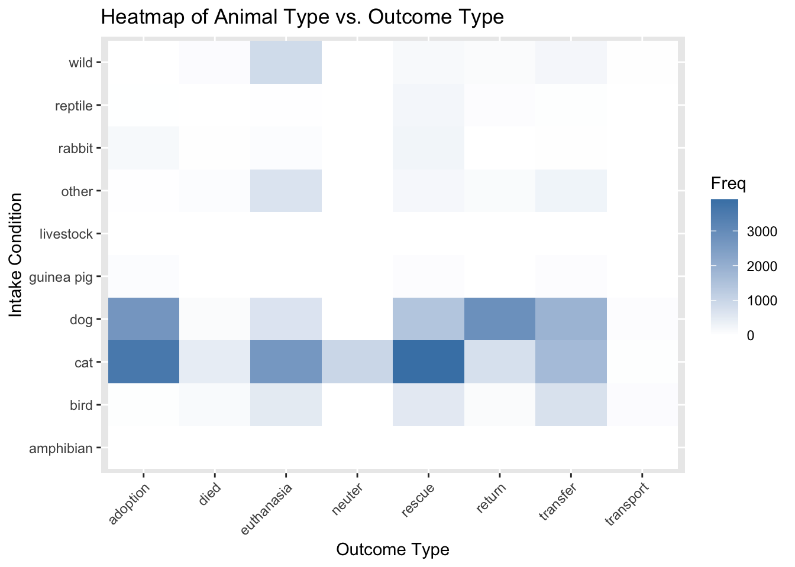
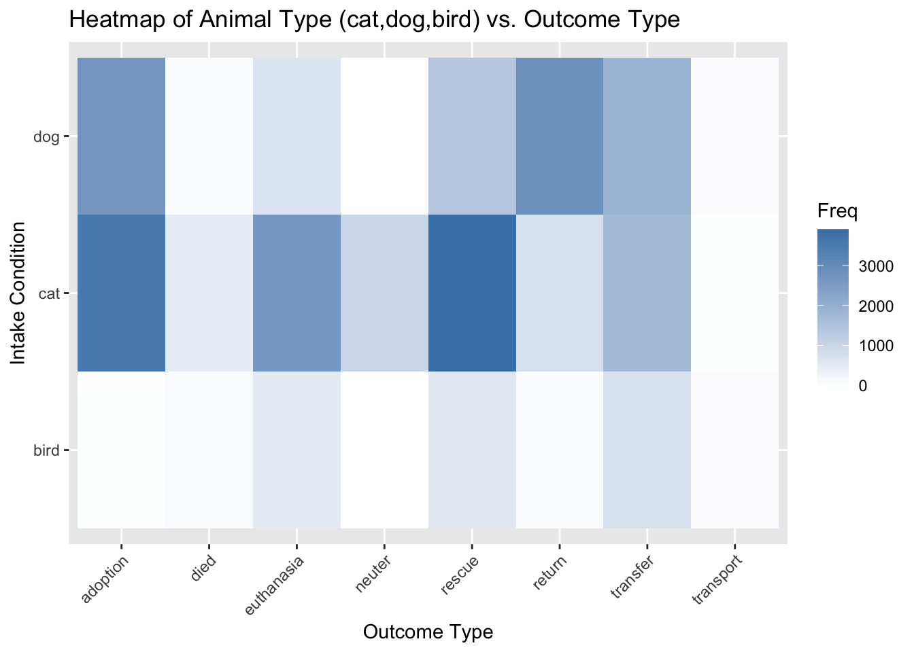

# A tibble: 6 × 22
animal_id animal_name animal_type primary_color secondary_color sex
<chr> <chr> <chr> <chr> <chr> <chr>
1 A693708 *charlien dog white <NA> Female
2 A708149 <NA> reptile brown green Unknown
3 A638068 <NA> bird green red Unknown
4 A639310 <NA> bird white gray Unknown
5 A618968 *morgan cat black white Female
6 A730385 *brandon rabbit black white Neutered
# ℹ 16 more variables: dob <date>, intake_date <date>, intake_condition <chr>,
# intake_type <chr>, intake_subtype <chr>, reason_for_intake <chr>,
# outcome_date <date>, crossing <chr>, jurisdiction <chr>,
# outcome_type <chr>, outcome_subtype <chr>, latitude <dbl>, longitude <dbl>,
# outcome_is_dead <lgl>, was_outcome_alive <lgl>, geopoint <chr>Tidy Tuesday 2025-03-04
Long Beach Animal Shelter data
The dataset comes from the City of Long Beach Animal Care Services via the {animalshelter} R package.
I did some basic dataviz and ran Chi Squared tests on a few variables. Getting back into the swing of things and buffing up on my Chi Squared assumptions and interpretations. Also this is
https://github.com/rfordatascience/tidytuesday/blob/main/data/2025/2025-03-04/readme.md
Reading in the data
Cleaning Data
Clean up the two variables (intake_condition, outcome_type) for a Chi Squared test. Making some assumptions here, but want to reduce the number of categories.
Inspecting some variables:
I want to do chi squared tests and here we look at some of the categorical variables.
Chi squared: is there a relationship btw intake_condition & outcome_type?
Pearson's Chi-squared test
data: contingency_table
X-squared = 19036, df = 84, p-value < 2.2e-16Calculate row proportions to analyze specific associations. Look for high proportions in specific cells.
adoption died euthanasia neuter
aged 0.1612903226 0.0064516129 0.0709677419 0.0000000000
feral 0.0638297872 0.0035460993 0.0921985816 0.5992907801
fractious 0.1435185185 0.0154320988 0.0787037037 0.4675925926
i/i report 0.4425531915 0.0212765957 0.0978723404 0.0000000000
ill mild 0.3060897436 0.0328525641 0.1810897436 0.0080128205
ill moderate 0.1919096896 0.0470366886 0.3461900282 0.0037629351
ill severe 0.0566448802 0.0951343500 0.6702977487 0.0021786492
injured mild 0.1897674419 0.0279069767 0.1609302326 0.0065116279
injured moderate 0.1171941831 0.0376390077 0.3079555175 0.0025662960
injured severe 0.0339063992 0.0725883477 0.6179560649 0.0038204394
normal 0.2991887906 0.0076696165 0.0407079646 0.0342920354
under age/weight 0.1790633609 0.0402509948 0.2209978574 0.0006121824
welfare seizures 0.1571428571 0.0285714286 0.0000000000 0.0000000000
rescue return transfer transport
aged 0.2129032258 0.5225806452 0.0258064516 0.0000000000
feral 0.1382978723 0.0602836879 0.0319148936 0.0106382979
fractious 0.1327160494 0.0864197531 0.0694444444 0.0061728395
i/i report 0.2468085106 0.1361702128 0.0553191489 0.0000000000
ill mild 0.2475961538 0.1346153846 0.0857371795 0.0040064103
ill moderate 0.2050799624 0.1081843838 0.0846660395 0.0131702728
ill severe 0.0726216412 0.0312273057 0.0711692084 0.0007262164
injured mild 0.1804651163 0.1925581395 0.2223255814 0.0195348837
injured moderate 0.1822070145 0.1035072712 0.2369546621 0.0119760479
injured severe 0.0787965616 0.0453677173 0.1423113658 0.0052531041
normal 0.1769911504 0.2143067847 0.2198377581 0.0070058997
under age/weight 0.4377104377 0.0085705540 0.1069788797 0.0058157331
welfare seizures 0.0714285714 0.6142857143 0.1285714286 0.0000000000Visualize with a heat map. You can see there are some common relationships between intake_condition & outcome_type: - “normal” intake has a high proportion of “adoptions” - “ill severe” and “injured severe” more associated with “euthanasia” :(
Post-hoc analysis: Checking associations between each specific pair of categories using the Bonferroni correction method. Positive (negative) residual means relationship is more frequent (less frequent) than expected. Values with absolute value > 2 indicate observation is significantly different from expected.
Dimension Value adoption died euthanasia neuter
1 aged Residuals -1.826033 -1.64282704 -3.6588996 -2.308623
2 aged p values 1.000000 1.00000000 0.0263430 1.000000
3 feral Residuals -6.424817 -2.51655271 -4.0228177 53.426371
4 feral p values 0.000000 1.00000000 0.0059810 0.000000
5 fractious Residuals -4.865920 -1.99271770 -7.0317230 62.543286
6 fractious p values 0.000118 1.00000000 0.0000000 0.000000
7 i/i report Residuals 8.163300 -0.64873009 -3.4443380 -2.846516
8 i/i report p values 0.000000 1.00000000 0.0595360 0.459685
9 ill mild Residuals 7.294820 1.00004757 -0.3374166 -5.058792
10 ill mild p values 0.000000 1.00000000 1.0000000 0.000044
11 ill moderate Residuals -2.411488 3.76219888 13.8173641 -5.442779
12 ill moderate p values 1.000000 0.01751600 0.0000000 0.000005
13 ill severe Residuals -15.127823 15.33626460 47.5551225 -6.565883
14 ill severe p values 0.000000 0.00000000 0.0000000 0.000000
15 injured mild Residuals -2.597720 -0.07147661 -2.0473439 -4.961174
16 injured mild p values 0.975988 1.00000000 1.0000000 0.000073
17 injured moderate Residuals -8.804967 1.97421153 11.0795702 -5.951825
18 injured moderate p values 0.000000 1.00000000 0.0000000 0.000000
19 injured severe Residuals -21.494644 12.69882687 53.0018215 -7.766149
20 injured severe p values 0.000000 0.00000000 0.0000000 0.000000
21 normal Residuals 29.378246 -19.68155086 -58.7782045 1.079252
22 normal p values 0.000000 0.00000000 0.0000000 1.000000
23 under age/weight Residuals -9.483851 6.62767024 8.5645844 -16.629015
24 under age/weight p values 0.000000 0.00000000 0.0000000 0.000000
25 welfare seizures Residuals -1.308943 0.01566045 -3.9871633 -1.549203
26 welfare seizures p values 1.000000 1.00000000 0.0069540 1.000000
rescue return transfer transport
1 -0.4015186 14.2787134 -4.6809372 -1.04659720
2 1.0000000 0.0000000 0.0002970 1.00000000
3 -3.5509639 -3.6329264 -6.0498225 0.74127534
4 0.0399180 0.0291430 0.0000000 1.00000000
5 -5.7601652 -3.5639620 -6.6261596 -0.24975207
6 0.0000010 0.0379910 0.0000000 1.00000000
7 0.7519276 0.1201928 -4.5477955 -1.29044721
8 1.0000000 1.0000000 0.0005640 1.00000000
9 1.8315284 0.1168854 -7.7081877 -1.28956611
10 1.0000000 1.0000000 0.0000000 1.00000000
11 -1.6889388 -2.4729676 -7.1866229 2.46869200
12 1.0000000 1.0000000 0.0000000 1.00000000
13 -13.9625569 -11.4292754 -9.6069507 -2.85499979
14 0.0000000 0.0000000 0.0000000 0.44758300
15 -3.6634633 5.7982147 5.1590454 5.03643673
16 0.0258780 0.0000010 0.0000260 0.00004900
17 -3.6813844 -3.0779359 6.7638513 2.09326161
18 0.0241250 0.2167770 0.0000000 1.00000000
19 -16.7413045 -12.3035643 -2.9013632 -0.98510226
20 0.0000000 0.0000000 0.3864050 1.00000000
21 -18.6874409 37.6237499 23.4031442 0.04796987
22 0.0000000 0.0000000 0.0000000 1.00000000
23 46.2657948 -33.6516522 -14.3187524 -1.28179013
24 0.0000000 0.0000000 0.0000000 1.00000000
25 -3.1012968 11.8402074 -0.8219898 -0.70231975
26 0.2003820 0.0000000 1.0000000 1.00000000Here we can see that severe illness is LESS associated with adoption, and MORE associated with euthanasia and death. SAD, but mild illness is more associated with adoption at least.
Dimension Value adoption died euthanasia neuter rescue
1 ill mild Residuals 7.294820 1.000048 -0.3374166 -5.058792 1.831528
2 ill mild p values 0.000000 1.000000 1.0000000 0.000044 1.000000
3 ill moderate Residuals -2.411488 3.762199 13.8173641 -5.442779 -1.688939
4 ill moderate p values 1.000000 0.017516 0.0000000 0.000005 1.000000
5 ill severe Residuals -15.127823 15.336265 47.5551225 -6.565883 -13.962557
6 ill severe p values 0.000000 0.000000 0.0000000 0.000000 0.000000
return transfer transport
1 0.1168854 -7.708188 -1.289566
2 1.0000000 0.000000 1.000000
3 -2.4729676 -7.186623 2.468692
4 1.0000000 0.000000 1.000000
5 -11.4292754 -9.606951 -2.855000
6 0.0000000 0.000000 0.447583Chi Squared: Checking the relationship btw animal_type and outcome_type
Pearson's Chi-squared test
data: contingency_table2
X-squared = 10563, df = 63, p-value < 2.2e-16This is indicating a strong overall discrepancy between the observed and expected frequencies in the contingency table. P-value is very small (statistically significant). BUT we do not meet assumptions of the model since dog, cat, or bird are most of the observations. There is only 1 amphibian, e.g., so we can’t possibly have 5 observations across ~10 outcomes.
The expected frequency in each cell of the contingency table should be at least 5 for the Chi-Square approximation to be valid.

Checking frequencies in contingency table. We know this will violate since there is only 1 amphibian record total, and few observations of the other animals.
adoption died euthanasia neuter rescue
amphibian 0.6662826 0.08478482 0.5541511 0.0992206 0.6790918
bird 459.5129109 58.47326330 382.1795662 68.4291427 468.3470010
cat 3115.9817011 396.51033548 2591.5801423 464.0216876 3175.8861403
dog 2136.5462555 271.87665198 1776.9779736 318.1674009 2177.6211454
guinea pig 38.2002033 4.86099627 31.7713318 5.6886479 38.9345984
livestock 2.2209421 0.28261606 1.8471705 0.3307353 2.2636394
other 294.9411047 37.53141308 245.3042359 43.9216537 300.6113182
rabbit 116.3773636 14.80908167 96.7917316 17.3305320 118.6147069
reptile 76.1783124 9.69373094 63.3579465 11.3442223 77.6428329
wild 313.3749238 39.87712640 260.6357506 46.6667570 319.3995256
return transfer transport
amphibian 0.4005422 0.4949848 0.02094205
bird 276.2405964 341.3744832 14.44303626
cat 1873.2023043 2314.8786852 97.93900373
dog 1284.4052863 1587.2511013 67.15418502
guinea pig 22.9644188 28.3791257 1.20067774
livestock 1.3351406 1.6499492 0.06980685
other 177.3066757 219.1132497 9.27034903
rabbit 69.9613690 86.4573365 3.65787869
reptile 45.7953236 56.5932565 2.39437479
wild 188.3883429 232.8078279 9.84974585Chi Squared: Checking the relationship btw animal_type (ONLY DOG, CAT, BIRD) and outcome_type
I don’t think think this really fits the Chi squared test requirements, since the animal type and outcome are not really independent. Birds are probably pigeons and wild birds that get injured/fly into buildings are not ever going to be adopted.
Pearson's Chi-squared test
data: contingency_table3
X-squared = 6217.8, df = 14, p-value < 2.2e-16